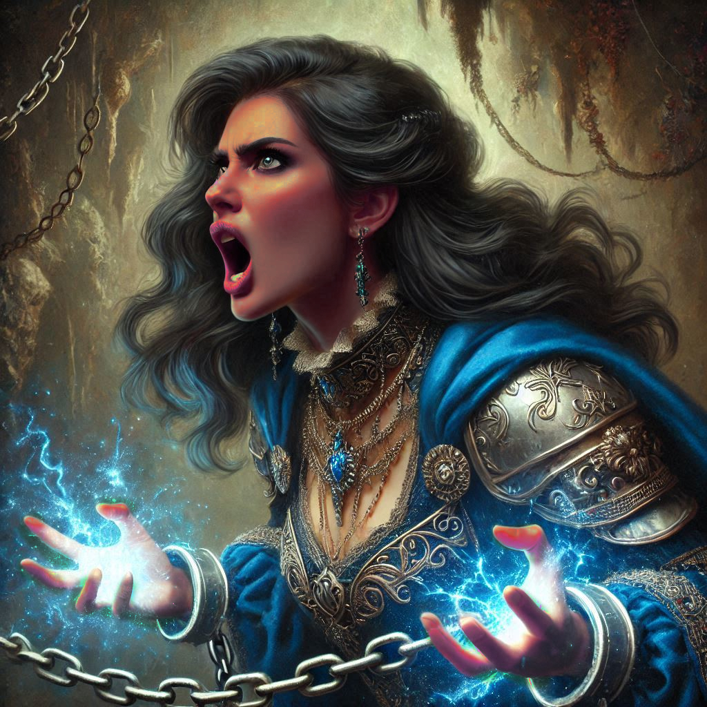

The Case for Treason
Your fingers tremble as you hold the bowstring taut, the arrow’s point aimed directly at Jorsh. The cavern’s shadows seem to thicken, curling around his form like they are a part of him. Liora lies motionless at your feet, her protective magic shattered, and Princess Hawthorn, now bound by dark chains, struggles in vain against her bonds. Jorsh’s eyes, once filled with boyish laughter and mischief, now burn with intensity—anger, desperation, and something else, something that tugs at the deepest part of you.
“Kira,” he whispers, his voice hoarse and raw. “You know I would never hurt you. You must listen to me.”
Your hands tremble, and your mind races. The boy you loved is gone, replaced by this sorcerer consumed by darkness. But still, his eyes—those same eyes that once promised you the world—plead with you now. Lowering your bow feels like a betrayal to everything you stand for, but leaving him standing in front of you, so human, so vulnerable, feels like a betrayal to your heart.
Slowly, painfully, you release the tension on your bowstring. The arrow dips, but you do not put it away.
“I’m listening,” you say, your voice steady, though your heart pounds in your chest.
Jorsh steps forward, his dark robes swishing like shadows on stone. His gaze flickers between you and the princess, calculating, but there’s an urgency in his movements. “The Kingdom of Yew is in danger, Kira. Varis—he’s no mere Minister of Trade. He’s a dark elf, a prince from the Realm of Shadows. He’s using the royal family to open a portal, a portal that will unleash his kin and allow them to invade Yew. If they succeed, everything—everyone you care about—will be destroyed.”
The words hit you like a blow, but you narrow your eyes. “And the princess? You’re holding her hostage!”
“I’m doing what I must!” he snaps, but his tone softens as he takes another step closer. “Kira, I never wanted to hurt anyone. But the royal family has been in Varis’s pocket for years. They’ve done nothing to stop him—if anything, they’ve allowed his evil to spread. I’ve seen the documents, the bribes, the blood pacts. They’ve made their choice. You need to make yours.”
Princess Hawthorn groans, struggling against the dark chains that bind her, her eyes flashing with indignation. “Don’t listen to him, Kira! He’s manipulating you. My family may have made mistakes, but we are the last line of defense against Varis. Jorsh has fallen too far into his magic. If you side with him, you doom the kingdom!”
You look at Jorsh, searching his face for any sign of deception, but he looks back at you with such intensity that it’s hard to breathe. His voice lowers to a whisper, filled with pain and longing. “I did all of this for you, Kira. I used the dark magic to protect you—to give us a chance. If we don’t stop Varis, everything we know will be consumed by the Shadow Realm. Please… join me. Help me stop him before it’s too late. Together, we can take control of the magic, and Yew doesn’t have to fall.”
He reaches out to you, his hand hovering between you, as though bridging the distance between past and present. Your heart wavers. This is the boy you once loved—the boy who promised you a future, who you thought was lost forever. But this is also the sorcerer who stands before you now, wrapped in shadows, who has chosen a path of darkness.
You take a step back, your mind swirling. “But you’re using the same dark magic Varis is. How can I trust you? How do I know this isn’t just about revenge?”
Jorsh’s jaw tightens, and his expression falters. “It started that way, yes. I wanted revenge for my father, for what they did to him. But it’s more than that now. Varis will destroy everything. You know me, Kira. You know I would never do anything to hurt you.”
His voice softens as he says your name again. “I love you, Kira.”
Your heart aches at the confession, raw and filled with the weight of all the years you spent apart. You remember the boy who once dreamed of a life together, but now he’s asking you to make an impossible choice.
Princess Hawthorn’s strained voice pulls you from the moment. “Kira… please. Don’t be fooled by him. He’s gone too far. If you side with him, you betray the kingdom. Arrest him, and we can stop Varis together.”
Your mind races, torn between loyalty to your mission and the memories of what once was. Jorsh waits, his hand still outstretched, while Hawthorn’s fate hangs in the balance.
You can feel the weight of the decision pressing on your chest—every second, every breath is a moment of choice.